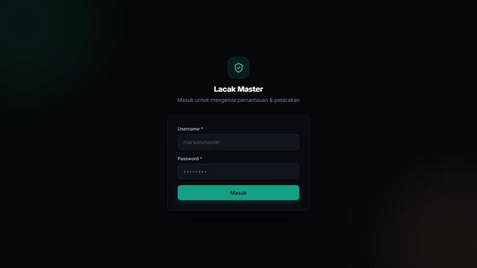
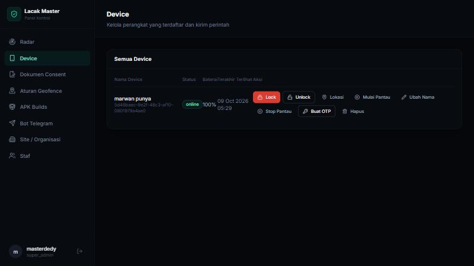
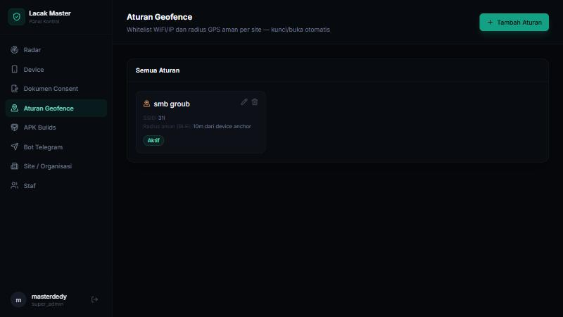
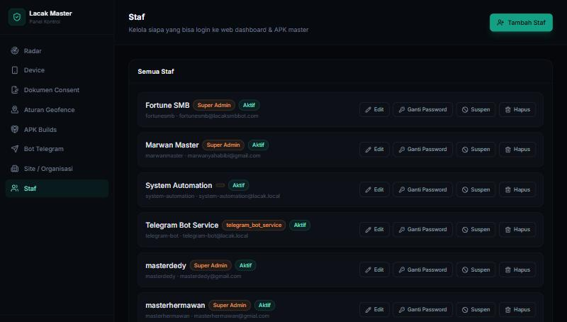
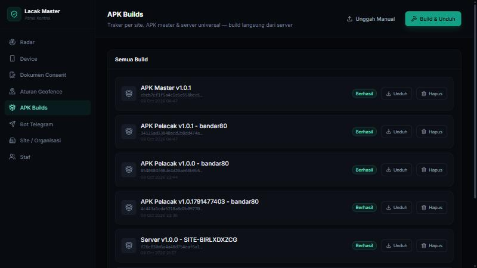
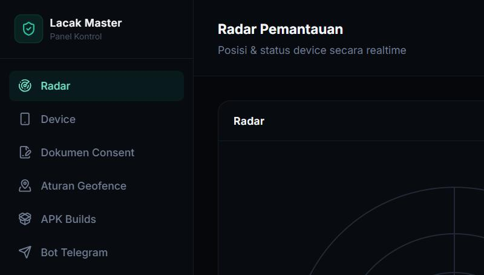

Lacak SMB dibangun untuk satu keperluan yang jelas: perusahaan perlu tahu di mana aset HP-nya berada, dan perlu bisa mengunci HP itu dari jarak jauh kalau keluar dari area yang seharusnya. Ini bukan aplikasi mata-mata. Setiap device yang terdaftar di sistem ini harus melalui proses persetujuan (consent) terlebih dahulu, dan pemegang device selalu tahu bahwa HP-nya sedang dipantau — notifikasi tracking selalu tampil di layar, tidak disembunyikan.
Sistem ini dipakai dalam konteks aset perusahaan: HP yang dipinjamkan ke staf untuk keperluan kerja, bukan HP pribadi karyawan. Setiap site (cabang atau unit kerja) punya kode uniknya sendiri, daftar device sendiri, dan aturan keamanannya sendiri yang bisa diatur lewat dashboard.
Ada dua cara utama memantau dan mengendalikan device: lewat dashboard web dari komputer, atau lewat APK Master dari HP admin. Keduanya terhubung ke server yang sama, jadi perubahan yang dibuat di satu tempat langsung terlihat di tempat lain.
Ada enam bagian yang bekerja sama. Memahami perannya masing-masing akan memudahkan kalau suatu saat ada yang perlu diperiksa atau diperbaiki.
Ini otak penyimpanan data: daftar site, daftar device, dokumen consent, aturan geofence, riwayat pelanggaran, akun staf. Semua permintaan dari dashboard web dan APK Master pada akhirnya singgah ke sini. Kalau backend ini mati, dashboard dan APK Master tidak akan bisa login atau memuat data, meskipun device yang sudah terhubung tetap bisa terus melapor ke gateway.
Ini yang menjaga koneksi hidup dengan setiap device yang sedang online. Device mengirim posisi dan status baterainya ke sini setiap beberapa detik, dan gateway inilah yang memutuskan kapan sebuah device harus dikunci otomatis karena melanggar aturan geofence. Dashboard dan APK Master juga terhubung ke gateway ini supaya radar dan status device terasa langsung berubah tanpa perlu refresh.
Panel kontrol lengkap yang dibuka lewat browser. Dari sini admin bisa membuat site baru, mengatur siapa yang boleh akses site mana, menambah staf, mengunggah dokumen consent, mengatur aturan geofence, dan memicu pembuatan APK baru.
Ini yang dipasang di HP yang mau dilacak. Setelah di-enroll, aplikasi ini berjalan sebagai layanan latar belakang yang selalu aktif, mengirim posisi secara berkala, dan akan menampilkan layar kunci penuh kalau ada perintah lock dari admin atau kalau device melanggar aturan geofence.
Ini aplikasi untuk admin atau staf yang berwenang, dipasang di HP mereka sendiri. Fungsinya mirip dashboard web tapi dalam bentuk yang lebih ringkas dan bisa dibawa ke mana-mana: lihat daftar device, kunci atau buka device, cari device secara fisik lewat radar Bluetooth, dan membuat kode OTP kalau pemegang device perlu membuka kuncinya sendiri.
Jalur cepat untuk perintah sehari-hari tanpa perlu buka dashboard: mengunci device, membuka device, minta lokasi terbaru, atau memicu pembuatan APK baru, semuanya lewat perintah singkat di Telegram.
Setiap akun yang login ke dashboard atau APK Master punya salah satu dari tiga peran berikut.
| Peran | Yang bisa dilakukan |
|---|---|
| Super Admin | Akses penuh ke semua site, bisa membuat site baru, membuat akun super admin lain, dan melihat statistik gabungan seluruh perusahaan. |
| Admin | Hanya bisa melihat dan mengelola site yang secara eksplisit diberikan aksesnya oleh super admin. Bisa mengunci, membuka, dan mengatur aturan geofence untuk site tersebut. |
| Leader | Sama seperti admin dari sisi site yang bisa diakses, tapi sifatnya lebih ke melihat laporan dan status — cocok untuk pengawas lapangan yang perlu tahu kondisi device timnya. |
Site mana saja yang bisa diakses oleh seorang admin atau leader diatur oleh super admin lewat menu Staf di dashboard. Satu akun bisa diberi akses ke lebih dari satu site sekaligus.
Baik dashboard web maupun APK Master memakai sistem login yang sama: username, password, dan verifikasi dua langkah (2FA) lewat aplikasi authenticator seperti Google Authenticator.

Site di sini berarti satu cabang, satu unit kerja, atau satu kelompok device yang diatur dengan aturan yang sama. Setiap site punya kode unik yang dibuat otomatis mengikuti nama site-nya saat pertama dibuat, dan kode inilah yang nanti tertanam di APK Pelacak yang dibangun untuk site tersebut. Hanya super admin yang bisa membuat site baru.
Halaman Device menampilkan semua HP yang terdaftar di site yang sedang dilihat, lengkap dengan status terkininya: online, offline, atau terkunci. Dari sini admin bisa mengunci atau membuka device secara manual, melihat posisi terakhirnya di peta, dan menghapus device yang sudah tidak dipakai.

Sebelum device bisa didaftarkan, harus ada dokumen consent yang masih berlaku untuk site tersebut. Dokumen ini bisa diunggah lewat menu Consent, dan setiap device yang didaftarkan akan dikaitkan dengan satu dokumen consent sebagai dasar persetujuannya. Kalau dokumen consent dicabut atau sudah lewat masa berlakunya, device yang terkait tidak akan bisa terhubung ke server lagi sampai ada dokumen consent baru.
Di sinilah admin menentukan area aman untuk sebuah site. Ada beberapa jenis pemeriksaan yang bisa diaktifkan sekaligus pada satu aturan: whitelist nama WiFi, whitelist rentang IP, radius GPS dari titik pusat tertentu, dan yang paling presisi untuk jarak dekat, radius berbasis sinyal Bluetooth dari satu device yang dijadikan titik acuan (anchor). Penjelasan lengkap cara kerja bagian ini ada di bab 8.

Menu ini khusus untuk super admin, dipakai untuk membuat akun baru, mengubah data akun yang sudah ada, mengganti password, menentukan perannya, dan mengatur site mana saja yang boleh diakses akun tersebut. Akun yang di-nonaktifkan dari sini langsung kehilangan akses ke dashboard maupun APK Master.

Riwayat semua APK yang pernah dibangun untuk setiap site, baik APK Pelacak maupun APK Master. Dari sini admin bisa memicu pembuatan APK baru dan mengunduh hasil build yang sudah selesai begitu statusnya berubah menjadi sukses.

Supaya bot Telegram tahu site mana yang berhak diakses oleh sebuah akun Telegram, akun itu perlu dihubungkan (bind) lewat menu ini terlebih dahulu.
Memasang device baru dilakukan dalam dua tahap: membangun APK untuk site yang dituju, lalu mendaftarkan device itu lewat aplikasi di HP-nya langsung.
Setelah login, layar utama menampilkan daftar semua device yang bisa diakses akun tersebut, lengkap dengan status online atau offline-nya. Mengetuk salah satu device membuka halaman detailnya, tempat tombol kunci dan buka berada, serta tombol untuk meminta lokasi terbaru dan membuat kode OTP self-unlock.
Di bagian atas ada beberapa ikon jalan pintas: radar untuk mencari device secara fisik lewat kekuatan sinyal Bluetooth-nya, aturan geofence untuk mengatur area aman, dokumen consent, dan unduh APK.
Fitur ini berguna kalau device yang dicari ada di ruangan yang sama tapi tidak kelihatan. APK Master akan memindai sinyal Bluetooth dari device-device yang sedang dilacak di sekitarnya, dan menampilkan perkiraan jaraknya — makin kuat sinyalnya, makin dekat device itu. Ini jauh lebih akurat untuk jarak dekat dibanding GPS, yang memang tidak dirancang untuk presisi di bawah sepuluh meter.
Kalau device sedang terkunci dan pemegangnya perlu membukanya sendiri tanpa menunggu admin, admin bisa membuatkan kode OTP enam digit dari sini. Kode itu dimasukkan langsung di layar kunci HP yang bersangkutan, dan device akan terbuka begitu kodenya benar. Kode ini hanya berlaku sekali pakai dan dalam waktu terbatas.

Bagian ini sering jadi yang paling membingungkan, jadi penjelasannya akan dibuat selengkap mungkin.
Setiap device yang sedang online mengirim laporan posisi secara berkala, setiap lima belas detik. Laporan ini dicocokkan dengan aturan geofence yang aktif untuk site device itu. Ada empat jenis pemeriksaan yang bisa dipakai, dan sebuah aturan boleh memakai lebih dari satu sekaligus:
| Jenis pemeriksaan | Cara kerja | Cocok untuk |
|---|---|---|
| Whitelist WiFi | Device harus terhubung ke salah satu nama WiFi yang diizinkan. | Kantor dengan jaringan WiFi tetap. |
| Whitelist IP | Device harus berada dalam rentang IP tertentu. | Jaringan dengan IP statis atau rentang DHCP yang konsisten. |
| Radius GPS | Jarak lurus dari titik pusat yang ditentukan, dihitung dari koordinat GPS device. | Area luas, radius puluhan meter ke atas. Tidak cocok untuk presisi dalam ruangan. |
| Radius BLE anchor | Satu device dijadikan titik acuan tetap (biasanya diam di satu tempat), device lain mengukur jaraknya dari kekuatan sinyal Bluetooth anchor itu. | Presisi jarak dekat, beberapa meter saja, termasuk dalam ruangan di mana GPS tidak bisa diandalkan. |
Begitu sebuah device terdeteksi melanggar salah satu aturan dua kali berturut-turut dalam rentang waktu singkat, sistem akan mengunci device itu secara otomatis, tanpa perlu admin menekan tombol apa pun. Syarat dua kali berturut-turut ini sengaja dipasang supaya satu pembacaan sinyal yang kebetulan meleset tidak langsung mengunci device yang sebenarnya masih di tempat yang benar.
Membuka kembali device yang terkunci otomatis juga tidak instan begitu device kembali ke area aman. Sistem meminta beberapa laporan posisi berturut-turut yang semuanya menunjukkan device sudah jauh di dalam area aman, bukan sekadar pas di garis batasnya, sebelum benar-benar membuka kuncinya. Ini untuk mencegah device yang baru saja menyentuh tepi area aman langsung terbuka lalu terkunci lagi beberapa detik kemudian karena sinyalnya masih goyang di sekitar batas.
Sebelum bisa dipakai, akun Telegram perlu dihubungkan ke site tertentu lewat menu Binding Telegram di dashboard. Setelah terhubung, perintah-perintah berikut bisa dipakai langsung di chat dengan bot.
| Perintah | Fungsi |
|---|---|
| /lock <id> | Mengunci satu device berdasarkan ID-nya. |
| /unlock <id> | Membuka kunci satu device. |
| /locate <id> | Meminta device mengirim posisi terbarunya sekarang juga, tanpa menunggu jadwal laporan berikutnya. |
| /status <id> | Menampilkan detail status satu device: online atau tidak, terkunci atau tidak, baterai, dan posisi terakhir. |
| /apk [tracker|master|server] | Memicu pembuatan APK baru untuk site yang terhubung dengan akun Telegram ini, lalu mengirimkan filenya begitu selesai dibangun. |
Periksa tiga hal: apakah device sudah benar-benar didaftarkan lewat dashboard atau APK Master dengan dokumen consent yang masih berlaku, apakah HP-nya terhubung ke internet, dan apakah izin lokasi "selalu" serta pengecualian baterai sudah diberikan. Kalau ketiganya sudah benar tapi tetap offline, coba buka aplikasi pelacaknya secara manual satu kali untuk memicu koneksi ulang.
Ini wajar kalau baru beberapa belas detik. Sistem sengaja menunggu beberapa laporan posisi berturut-turut yang konsisten menunjukkan device aman sebelum membukanya, seperti dijelaskan di bab 8. Kalau sudah lebih dari semenit dan belum terbuka, periksa apakah kuncinya dipasang manual oleh admin — kalau iya, memang harus dibuka manual juga.
Ya. Penguncian di sistem ini bersifat layar penuh di dalam aplikasi, bukan mematikan fungsi HP secara total, jadi panggilan darurat tetap bisa dilakukan sesuai standar Android.
Hanya akun yang diberi akses ke site tempat device itu terdaftar, yaitu super admin dan akun admin atau leader yang secara eksplisit diberi akses ke site tersebut oleh super admin.
APK Pelacak dipasang di HP yang mau dilacak dan dipantau, sementara APK Master dipasang di HP admin untuk mengendalikan dan memantau semua device itu. Satu HP tidak boleh memasang keduanya untuk tujuan yang sama, meskipun secara teknis bisa dipasang bersamaan kalau HP itu dipakai admin sekaligus sebagai salah satu aset yang dilacak.